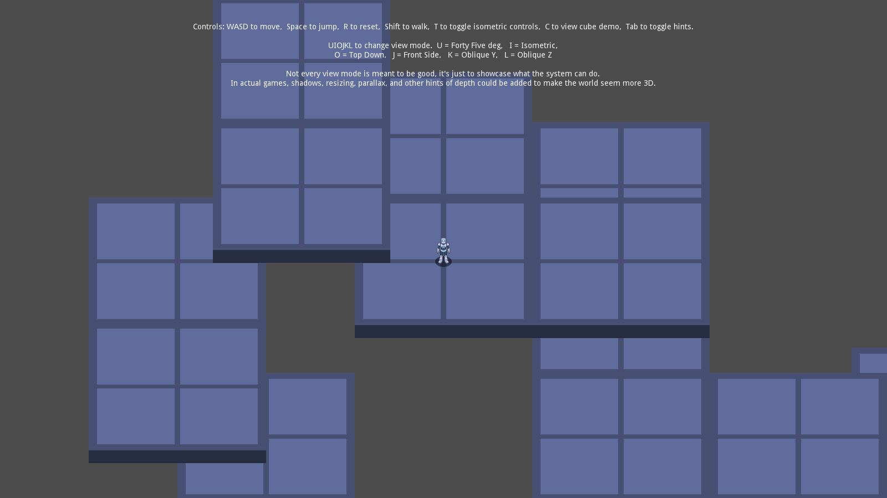
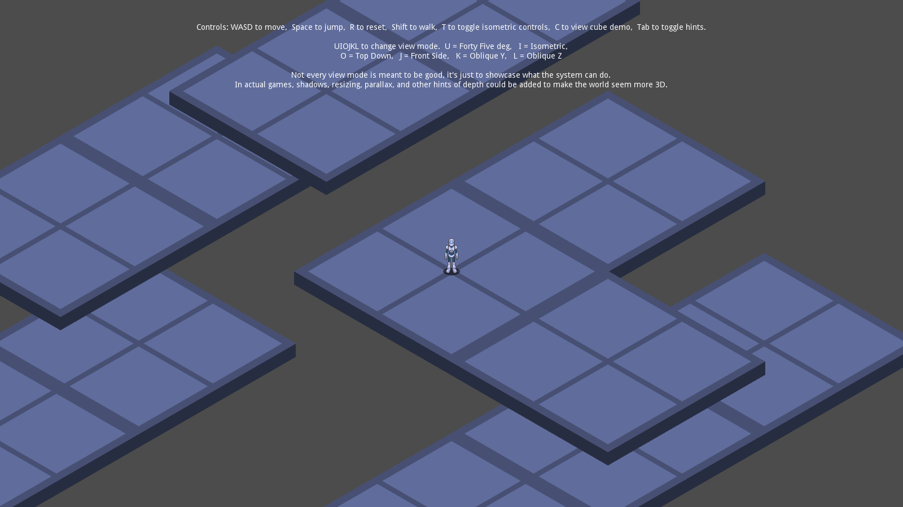
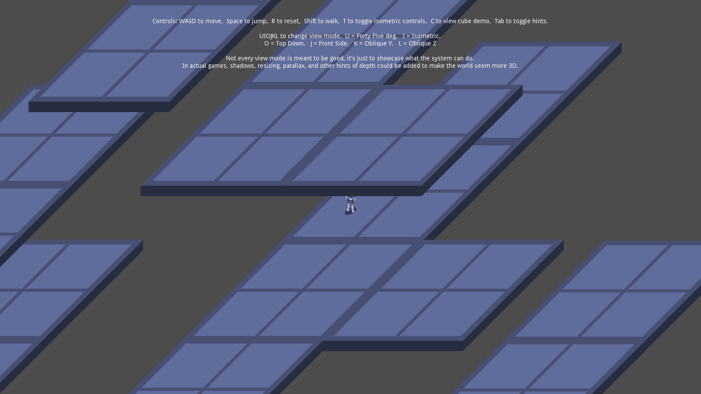
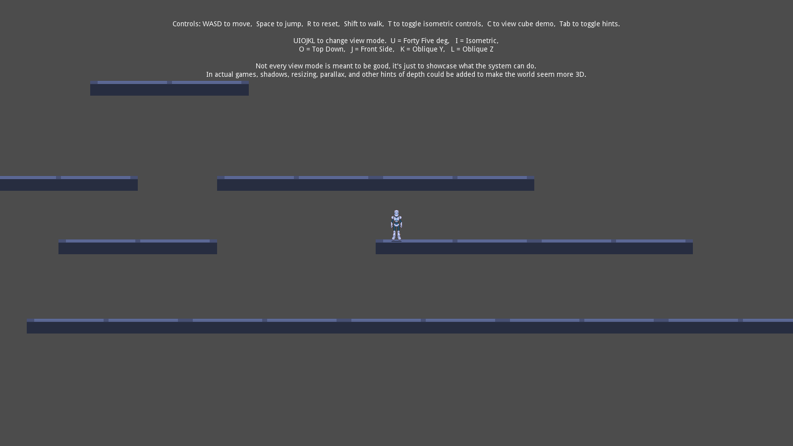
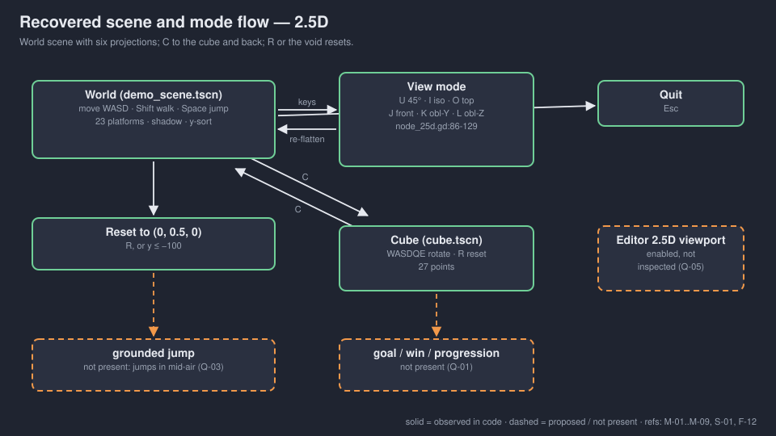
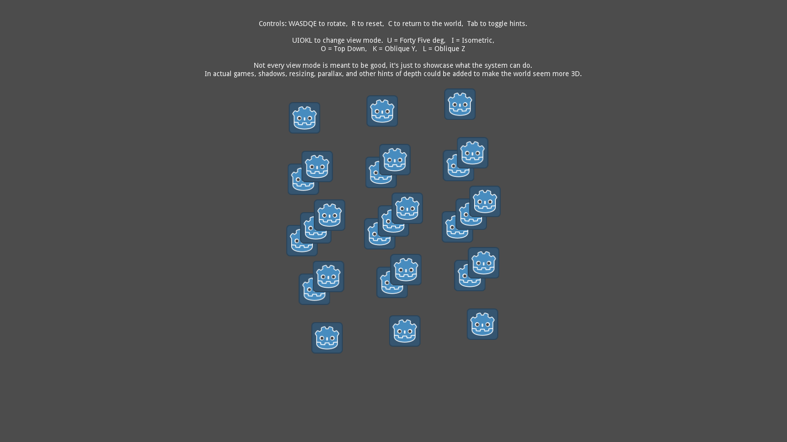
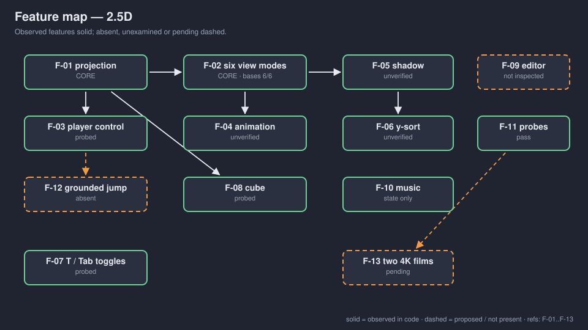

A GDScript adaptation of Godot's misc/2.5d. A tech demo with a playable sandbox: run, jump, switch six projections. No goal, no win, no fail.
OBSERVED in code INFERRED implied MISSING undecided
No gate signed. No human playtest. → GDD.md




INFERRED upstream screenshots (godot/README.md), not Walker captures. Walker verified basis state headlessly, not these pixels.

| Key | Mode | basisX | basisY | basisZ |
|---|---|---|---|---|
| U | 45° | (1, 0) | (0, −0.707) | (0, 0.707) |
| I | isometric | (0.866, 0.5) | (0, −1) | (−0.866, 0.5) |
| O | top-down | (1, 0) | (0, 0) | (0, 1) |
| J | front | (1, 0) | (0, −1) | (0, 0) |
| K | oblique Y | (1, 0) | (−0.707, −0.707) | (0, 1) |
| L | oblique Z | (1, 0) | (0, −1) | (−0.707, 0.707) |
OBSERVED node_25d.gd:86-111. Walker probe: all six within 0.001.
Space sets vertical speed 60 whenever pressed; gravity 240. OBSERVED player_math_25d.gd:53-56. You can jump in mid-air, forever.
Q-03 Describe it as upstream behaviour, or change the copy?

INFERRED upstream screenshot. Walker probe: each of W/S/A/D/Q/E changes the basis; R restores identity.

The editor plugin (F-09) is enabled and advertised upstream, and nobody in Walker has opened it.
Probed with real key events: D, Shift, Space, R, U/I/O/J/K/L, T, Tab, C, W/S/A/D/Q/E. OBSERVED FRICTIONAL.md sessions.
Not verified: sprite alignment, shadows, occlusion, audio listening, controller, editor plugin, films.
If Walker wants a 2.5D game, write a new brief and pick one view. For the films, show what breaks: flat modes hide depth, sort is a frame late, the shadow is a shapecast.